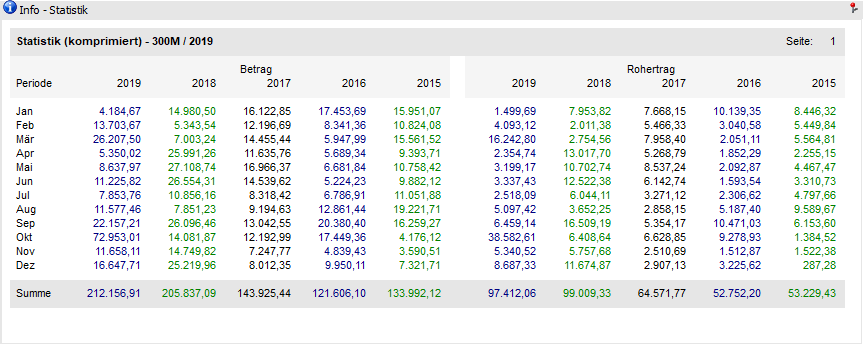
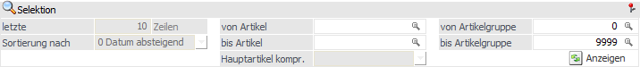

Kontoinformation - Bereich "Statistik" - Ansicht "komprimiert"
In dieser Ansicht werden die Statistikzeilen (Betrag und Rohertrag) für das aktuelle Jahr, sowie für 4 Vorjahre (nach Monaten kumuliert), angezeigt.
Die Ansicht "komprimiert" besteht aus den folgenden Info-Elementen:
ü Info - Statistik
ü Selektion
Info - Statistik

An dieser Stelle werden die komprimierten Statistikzeilen, gemäß der nachfolgenden Selektion, dargestellt.
Selektion

Für die Darstellung der Anzeige stehen die folgenden Einstellungen zur Verfügung.
Ø Kalenderjahr
Durch Aktivierung der Option werden die Werte (Menge bzw. Betrag) in der Periode dargestellt, in welcher diese (lt. Datum des Belegs) auch tatsächlich erfasst wurden.
Hinweis
Diese Option steht nur für Mandanten mit abweichendem Wirtschaftsjahr, wobei der Wirtschaftsjahresbeginn in Periode 1 liegt, zur Verfügung.
Ø Artikel von / bis
Durch eine Eingabe in den Feldern "von Artikel" und "bis Artikel" kann eine Selektion auf bestimmte Artikel erfolgen.
Ø Artikelgruppe von / bis
Durch eine Eingabe in den Feldern "von Artikelgruppe" und "bis Artikelgruppe" kann eine Selektion auf bestimmte Artikel erfolgen.
Ø  Anzeigen
Anzeigen
Durch Anwahl des Buttons "Anzeige" wird die Statistik aufgrund der getroffenen Einstellungen angezeigt.